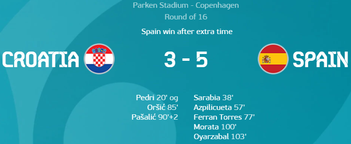

Day 18
Croatia v Spain

A brilliant game which started off on a comical note. Spain were very threatening in the first few minutes. However a back pass from Pedri was controlled badly by Unai Simon leading to an own goal, the 9th of the tournament. To put this into perspective, 18 have been scored in the entire history of the Euros and 9 have come from this very tournament. Crazy. It was first credited as an Unai Simon own goal before being changed to a Pedri own goal. Sarabia however managed to equalise after a major scramble and a save from the keeper. The second half was filled with action as well. Azpilicueta scored his first ever goal for the national team from a brilliant cross. Later Ferran Torres who was a menace throughout the game managed to score with a composed finish. However, the Spanish defence completely dozed off as Croatia managed to come back to 3-3 at full time from a header at stoppage time and the previous goal coming from a goal mouth scramble as well. In extra time however Spain took control with Morata scoring a great volley and Oyarzabal making it 5 from a great low cross. Unai Simon also came into his own after that bizarre own goal by making a brilliant save in extra time in another scramble from Croatia.
France v Switzerland
Penalty Shootout
Gavranovic (0-1)
Pogba (1-1)
Schar (1-2)
Giroud (2-2)
Akanji (2-3)
Thuram (3-3)
Vargas (3-4)
Kimpembe (4-4)
Mehmedi (4-5)
Mbappe (4-5)
France were poor in this all things considered. The defence slept for 2 Swiss headers(Shambolic how easy it was for them to score). Pogba was at fault partly for losing the ball before the pass to Gavranovic who equalised before full time. The Swiss scored first after Seferovic easily pushed aside Lenglet to score the header. France came alive in the second half with Benzema scoring a brace to show Mbappe how it’s done after he missed a good amount of chances not only in this match but the entire tournament overall. He has taken 14 shots without scoring. A new record in the tournament. Even though he did assist one of Benzema’s goals, he has had a shambolic Euros. Not something one would expect from the youngster. He also managed to have one final thing not go his way when he missed the decisive penalty. After the Benzema brace, Pogba was in loads of space before curling an absolute stunner for the 3rd goal which should have sealed the game for France. Switzerland did have a chance to pull one back when a penalty was given after a VAR review for Pavard bringing down Zuber but Rodriguez missed after Lloris saved brilliantly. Seferovic managed to score again after getting ahead of Varane. Gavranovic scored after a great pass from Xhaka after Pogba lost the ball in midfield.
Confirmed Quarter Final
- Switzerland v Spain